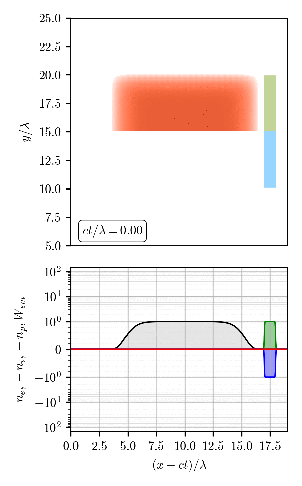
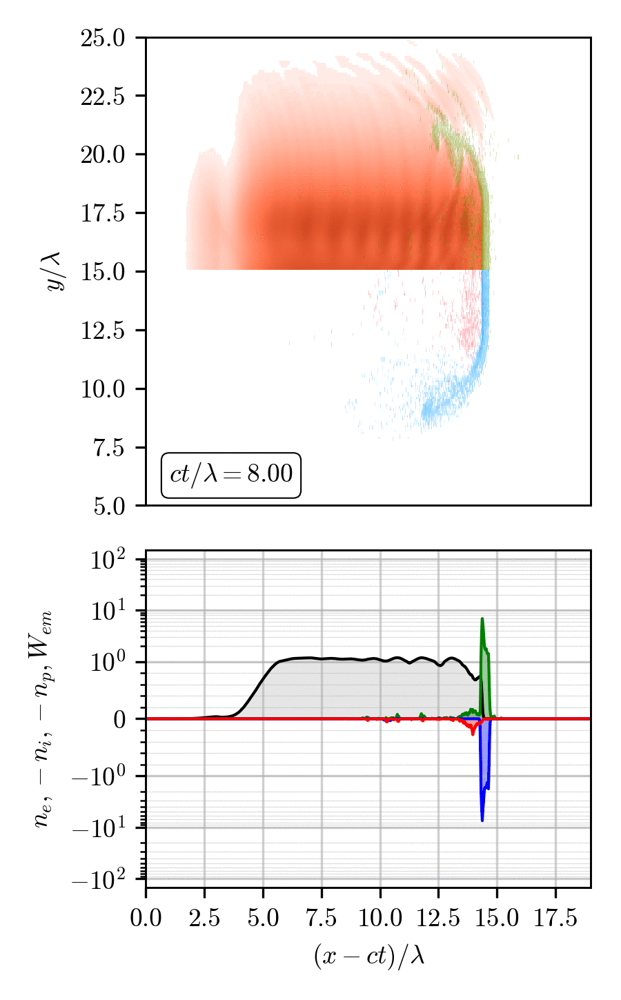
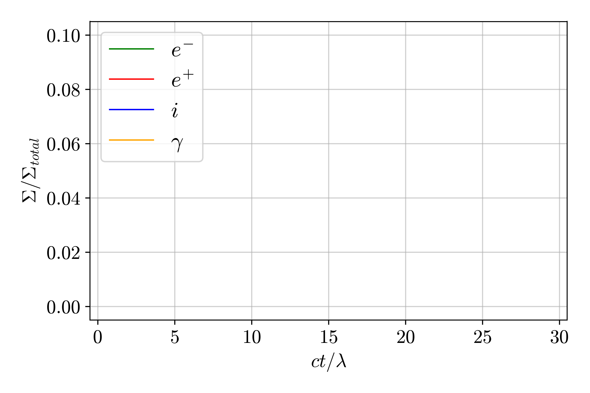
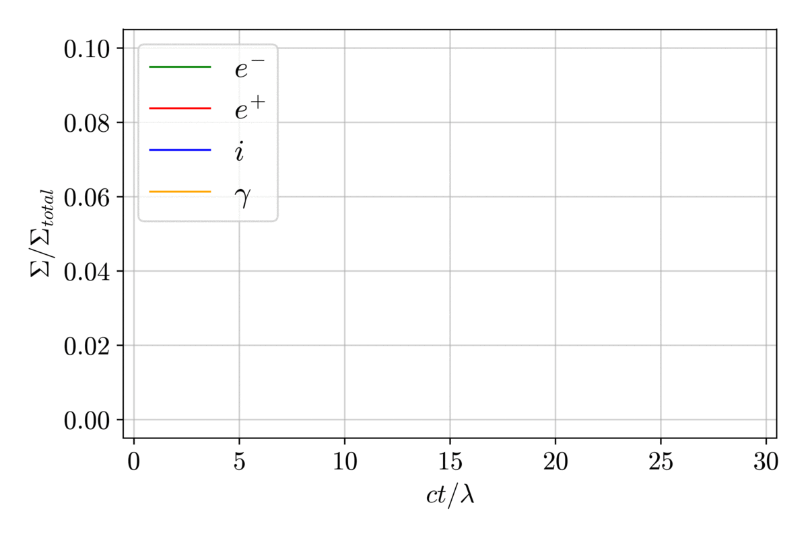
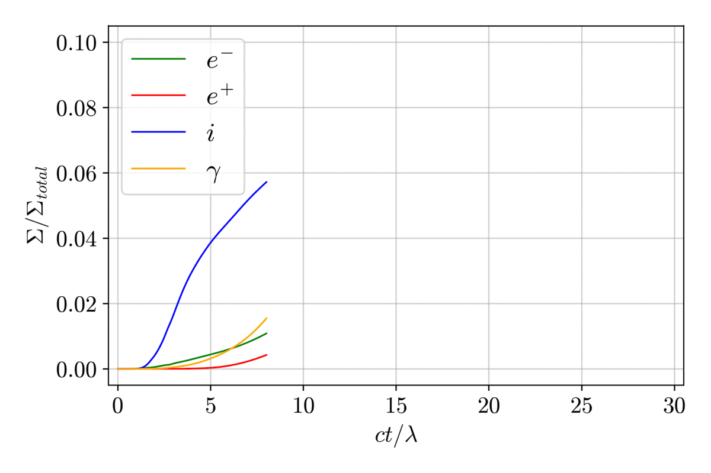
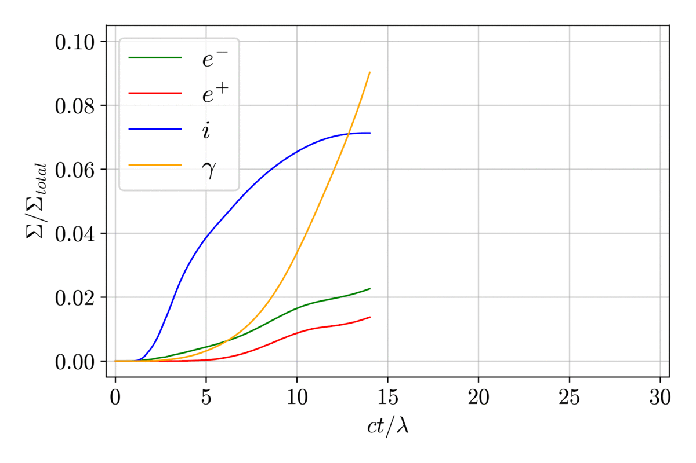

КЭД каскад в плоской волне



Параметры моделирования:
$a_0 = 2500$
$\lambda = 1\ \text{мкм}$
$d = 1\ \text{мкм}$
$n_e = 5.9\cdot 10^{23}\ \text{см}^{-3}\approx 530 n_{cr}$




A. S. Samsonov, E. N. Nerush, I. Yu. Kostyukov, Sci. Rep. 9, 11133 (2019):
link